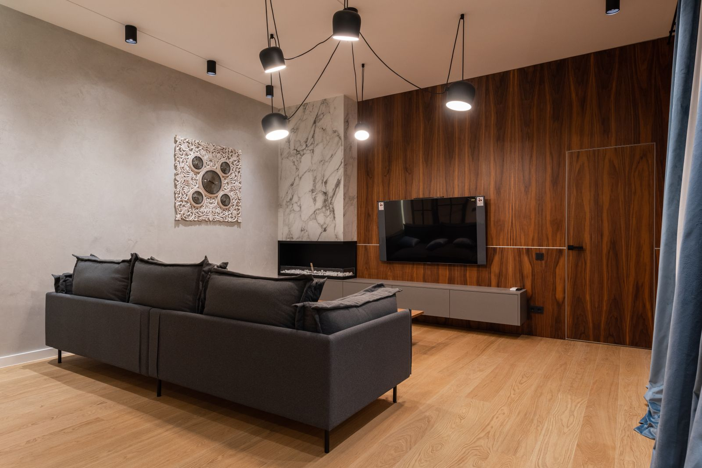
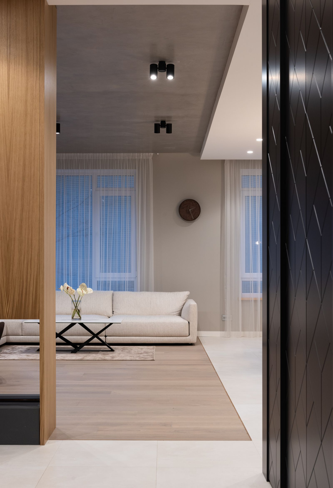
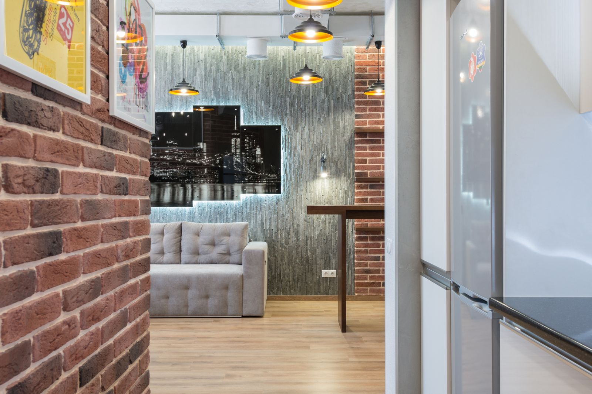
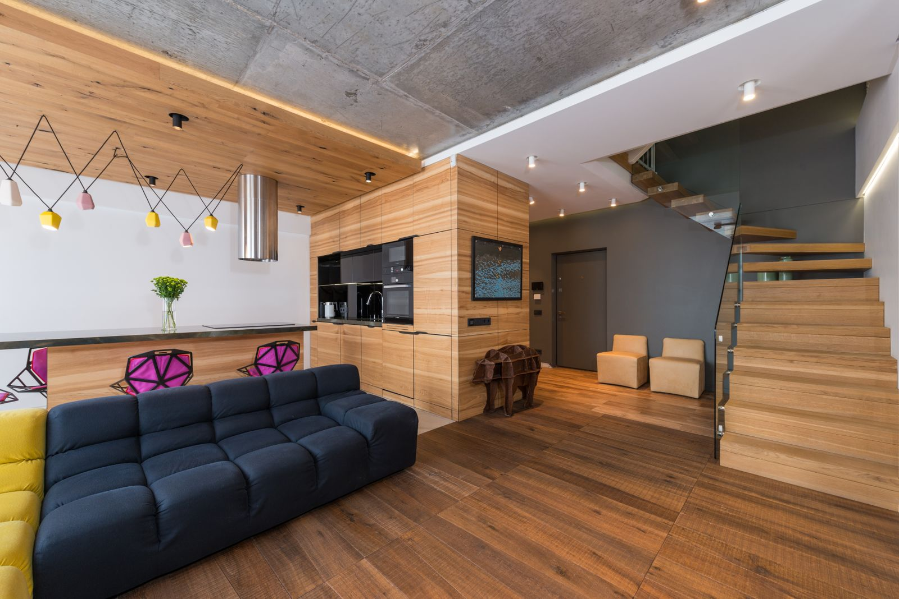
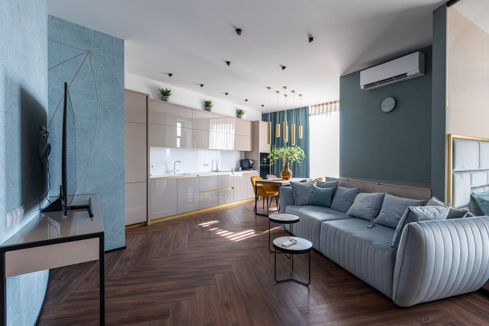
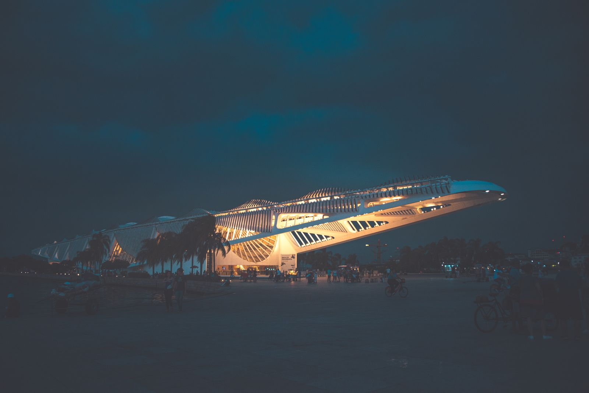

۰۱ — خدمت اصلی
طراحی معماری
طراحی فاز صفر تا دو برای پروژههای مسکونی، تجاری و فرهنگی؛ از مطالعه زمین و ایده اولیه تا نقشههای اجرایی کامل و هماهنگی با سازه و تأسیسات.

ما فضاهایی میسازیم که از مصالح ساده و نور صادقانه به وجود میآیند؛ خانههایی برای زندگی، ساختمانهایی برای شهر و مکانهایی برای مکث.
باور ما ساده است: ساختمان خوب، پیش از آنکه دیده شود، احساس میشود. نسبت، نور و سکوتِ فضا را طراحی میکنیم؛ باقی، خودبهخود زیبا میشود.
گزیدهای از کارهای اخیر استودیو؛ برای دیدن جزئیات هر پروژه، روی آن کلیک کنید.


استودیو معماری آرمان از سال ۱۳۸۵ در تهران کار میکند؛ تیمی چهلنفره از معماران، طراحان داخلی و مهندسان که هر پروژه را — از ویلای خصوصی تا ساختمان فرهنگی — با یک روش انجام میدهند: کمتر، اما دقیقتر.
ما به جای امضای پرزرقوبرق، به زمینه گوش میدهیم: اقلیم، نور، مصالح بومی و شیوه زندگی ساکنان. نتیجه، معماریای است که به مکانش تعلق دارد و با گذر زمان کهنه نمیشود.
چهار حوزه اصلی فعالیت استودیو؛ هر کدام با تیم و فرایند اختصاصی خودش.
طراحی فاز صفر تا دو برای پروژههای مسکونی، تجاری و فرهنگی؛ از مطالعه زمین و ایده اولیه تا نقشههای اجرایی کامل و هماهنگی با سازه و تأسیسات.

طراحی فضای داخلی خانه، دفتر و فضاهای تجاری؛ انتخاب مصالح، نورپردازی و مبلمان سفارشی، با اجرای کلیددر دست و تحویل آماده سکونت.

نظارت مقیم و عالیه بر اجرا، کنترل کیفیت مصالح و جزئیات، مدیریت پیمانکاران و گزارش پیشرفت شفاف؛ تا ساختمان ساختهشده، همان نقشه روی کاغذ باشد.

بازسازی آپارتمان، خانههای قدیمی و فضاهای اداری؛ حفظ روح بنا و افزودن آسایش امروز — با برآورد دقیق هزینه و زمان پیش از شروع.
در هر قدم میدانید چه چیزی تحویل میگیرید، چقدر طول میکشد و قدم بعدی چیست.

جلسه شناخت، بازدید از زمین یا بنای موجود و شنیدن نیازها؛ خروجی این قدم، برنامه فیزیکی و برآورد اولیه است.
ارائه ایده اصلی با اسکیس، ماکت و رندر؛ کانسپت وقتی قفل میشود که هم ما و هم شما به آن بگوییم «همین است».
نقشههای معماری، سازه و تأسیسات با جزئیات اجرایی کامل؛ آماده اخذ پروانه و شروع ساخت، بدون ابهام برای پیمانکار.
نظارت مستمر بر کارگاه، کنترل کیفیت و گزارش تصویری هفتگی؛ انحراف از نقشه، همان هفته اصلاح میشود.
تحویل نهایی با صورتجلسه، دفترچه نگهداری بنا و یک سال همراهی پس از تحویل برای رفع ایرادهای احتمالی.
نسخه نهایی در ۱۵ تا ۲۰ صفحه و با پنل مدیریت کامل فارسی ساخته میشود تا تیم شما بدون نیاز به برنامهنویس، همه محتوا را مدیریت کند.
صفحه اصلی، درباره استودیو، تیم و اعضا، افتخارات و جوایز، فرصتهای همکاری.
آرشیو پروژهها با فیلتر دستهبندی و صفحه اختصاصی هر پروژه شامل گالری، مشخصات و داستان طراحی.
صفحه اختصاصی هر خدمت: طراحی معماری، دکوراسیون داخلی، نظارت و اجرا، بازسازی — با نمونهکار مرتبط.
وبلاگ معماری با دستهبندی و جستوجو، اخبار استودیو و انتشار پروژههای تازه — موتور رشد سئوی سایت.
فرم درخواست جلسه، نشانی و نقشه، پرسشهای پرتکرار و مسیر دسترسی — با ثبت دفتر در گوگلمپ.
مدیریت کامل پروژهها، مقالات، خدمات و فرمها از پنل فارسی؛ بدون حتی یک خط کدنویسی برای تیم شما.
از مجله استودیو؛ جایی برای فکر کردن به معماری، مصالح و شهر.

ساختمانهایی که با الگوریتم طراحی میشوند چه چیزی را از دست میدهند و چه چیزی به دست میآورند؟ نگاهی به موزه آینده دوبی و درسهایش برای ما.
خواندن یادداشت ←
مینیمالیسم یعنی حذف زائد، نه حذف معنا. چطور در پروژههای اخیر استودیو با کمتر ساختن، فضای بیشتری برای زندگی ساختیم.
خواندن یادداشت ←
یک پنجره درست، از گرانترین سنگ نما ارزشمندتر است. اصول جهتگیری، عمق نورگیر و سایهبان در اقلیم تهران.
خواندن یادداشت ←پاسخ پرسشهایی که در بیشتر جلسههای اول شنیدهایم. پرسش دیگری دارید؟ در فرم مشاوره بنویسید.
بر اساس متراژ، نوع پروژه و دامنه خدمات (فقط طراحی، یا طراحی + نظارت + اجرا). پس از جلسه شناخت و بازدید، پیشنهاد مالی شفاف و مرحلهبندیشده ارائه میشود؛ هیچ هزینه پنهانی در کار نیست.
برای یک واحد مسکونی معمولاً ۴ تا ۶ هفته تا فاز یک و ۴ هفته برای فاز دو. پروژههای بزرگتر در قرارداد، زمانبندی دقیق و مرحلهبهمرحله دارند و پیشرفت کار هفتگی گزارش میشود.
بله؛ نظارت عالیه و مقیم هر دو ممکن است. تجربه ما میگوید بیشتر انحرافها از نقشه در چند هفته اول اجرا رخ میدهد، پس حضور ما در کارگاه از همان روز اول برنامهریزی میشود.
فقط یک جلسه شناخت. اگر زمین یا بنای موجود دارید، سند و نقشه وضع موجود (در صورت وجود) کمک میکند؛ باقی مسیر — از برنامه فیزیکی تا قرارداد — قدمبهقدم با هم جلو میرویم.

دفتر ما در تهران است و درِ آن برای جلسه شناخت — بدون هیچ تعهدی — باز است. نشانی و نقشه دقیق در نسخه نهایی سایت، همراه با ثبت رسمی دفتر در گوگلمپ منتشر میشود.
نقشه تعاملی گوگلمپ در نسخه نهایی سایت فعال میشود؛ دفتر استودیو نیز بهصورت رسمی در گوگلمپ ثبت خواهد شد.